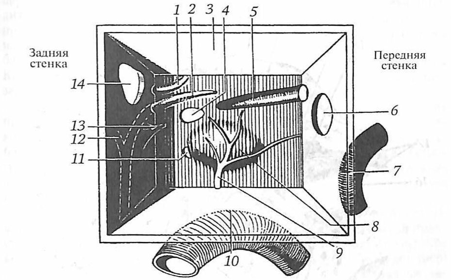

Словарь: М
- М-ответ
- Мышечный ответ, который регистрируют накожными электродами при стимуляции лицевого нерва (электронейрография: надмаксимальная стимуляция ствола нерва). Степень дегенерации выражают в процентах относительно здоровой стороны, принятой за 100%; потеря более 90% — неблагоприятный прогностический признак полного восстановления.не из КР: Probst R., Grevers G., Iro H. Basic Otorhinolaryngology (Thieme), с. 292 (PDF 302)
- Магнитно-резонансная томография 2 значения
- 1Метод лучевой диагностики, основанный на регистрации высокочастотных сигналов ядер водорода (протонов) в ответ на радиочастотные импульсы в магнитном поле. Даёт более высокое качество изображения мягких тканей, чем компьютерная томография.не из КР: Пальчун В. Т., Лучихин Л. А., Магомедов М. М. «Руководство по практической оториноларингологии» (М.: МИА, 2010), с. 123В разборах: Болезнь Меньера, Врождённая цитомегаловирусная инфекция, Отосклероз, Нейросенсорная тугоухость у взрослых, Наружные отиты, Хронический средний отит, Полипозный риносинусит, Хронический синусит
- 2способ получения томографических медицинских изображений для исследования внутренних органов и тканей с использованием явления ядерного магнитного резонанса.Увеальная меланома, «Термины и определения»В разборах: Рак носоглотки у детей, Краниальные мононейропатии у взрослых
- Макроглоссия
- Увеличение объёма языка; может быть обусловлено опухолью, лимфангиомой, гемангиомой, воспалительным процессом, микседемой.не из КР: Бабияк В. И., Накатис Я. А., Говорун М. И. «Оториноларингология. Руководство», т. 1 (СПб.: Питер, 2009), с. 459
- Малоинвазивные операции (процедуры)
- щадящие операции или процедуры, не сопровождающиеся выраженными болевыми ощущениями и, как правило, не требующие специального обезболивания и пребывания в стационаре. Данные вмешательства не приводят к длительному ограничению трудоспособности и сопровождаются достаточно быстрым периодом реабилитации.Геморрой, «Термины и определения»
- Малый размер к сроку гестации
- Масса и длина тела при рождении ниже 10-го перцентиля для гестационного возраста.не из КР: КР «Врожденная цитомегаловирусная инфекция», раздел 1.6, таблица 1, с. 10
- Мальформация
- любое отклонение от нормального физического развития, аномалия развития, повлекшая за собой грубые изменения строения и функции органа или ткани. Мальформация может быть врожденным или приобретенным дефектом развития, а также возникать в результате какого-либо заболевания или травмы.Ангиодисплазия кишечника, «Термины и определения»
- Марсупиализация
- Широкое вскрытие мукоцеле с созданием постоянного сообщения с полостью носа (назализация), эндоскопическое либо наружное; метод первой линии при простых мукоцеле. Для сложных лобных мукоцеле нередко требуется модифицированная эндоскопическая операция Лотропа.не из КР: Watkinson J. C., Clarke R. W. (eds.) «Scott-Brown's Otorhinolaryngology Head & Neck Surgery», 8th ed. (CRC Press, 2018), т. 1, гл. 102, PDF с. 1157
- Марсупилизация
- двухэтапная операция сочетает цистотомию и цистэктомию. На I этапе производят декомпрессионную операцию - создают сообщение с полостью рта по типу цистотомии, но меньшего диаметра, однако достаточное для осуществления оттока содержимого из кистозной полости на продолжительный период. При значительном объёме кисты, её нагноении или интимной близости с важными анатомическими образованиями, или корнями интактных зубов на первом этапе проводят цистотомию. На II этапе производят цистэктомию через определенный промежуток времени (в среднем через 0,5- 1,5 года), которую при необходимости можно дополнить костной пластикой.Кисты челюстно-лицевой области и шеи, «Термины и определения», с. 5
- Маскировка
- Психофизиологический феномен: при одновременном восприятии двух звуков разной частоты более интенсивный (громкий) звук маскирует более слабый. В аудиометрии при асимметричном снижении слуха маскируют лучше слышащее (неисследуемое) ухо шумом.не из КР: Бабияк В. И., Накатис Я. А., Говорун М. И. «Оториноларингология. Руководство», т. 2 (СПб.: Питер, 2009), с. 343
- Массивная кровопотеря
- одномоментная потеря ≥1500 мл крови (25-30% ОЦК) или ≥2500 мл крови (50% ОЦК) за 3 часа.Эмболия амниотической жидкостью, «Термины и определения»
- Мастоидит 2 значения
- 1острое или хроническое деструктивное воспаление слизистой оболочки, периоста и костной основы ячеистой структуры сосцевидного отростка.Мастоидит, «Термины и определения», с. 5В разборах: Наружный отит у детей, Нейросенсорная тугоухость у детей, Мастоидит, Нейросенсорная тугоухость у взрослых, Травма уха
- 2Деструктивный остеопериостит ячеистой структуры сосцевидного отростка (синоним: эмпиема сосцевидного отростка). Преимущественно развивается на фоне острого гнойного среднего отита, значительно реже при обострении хронического гнойного среднего отита.не из КР: Оториноларингология: национальное руководство / под ред. В. Т. Пальчуна, гл. 11 «Болезни уха» (раздел «Мастоидит»)В разборах: Отит средний острый
- Мастоидотомия
- Вскрытие ячеек сосцевидного отростка и пещеры (антрума) через заушный разрез с созданием широкого сообщения между надбарабанным пространством и сосцевидным отростком; основное показание — мастоидит. Антромастоидотомия — вскрытие антрума и трепанация сосцевидного отростка с удалением поражённых тканей.не из КР: Probst R., Grevers G., Iro H. «Basic Otorhinolaryngology: A Step-by-Step Learning Guide» (Thieme), с. 255 PDF; Пальчун В. Т., Лучихин Л. А., Магомедов М. М. «Руководство по практической оториноларингологии» (М.: МИА, 2010), с. 330
- Мастоидэктомия
- Операция на сосцевидном отростке, при которой иногда удаляют отросток целиком вместе с верхушкой; в детском возрасте до 3 лет вмешательство называют антротомией.не из КР: Пальчун В. Т., Лучихин Л. А., Магомедов М. М. «Руководство по практической оториноларингологии» (М.: МИА, 2010), с. 330
- МАТ сокращение
- моноклональное антителоРак полости носа и придаточных пазух, «Список сокращений», с. 3; Рак ротоглотки, «Список сокращений», с. 3
- Матовое стекло 2 значения
- 1Рентгенологический признак фиброзной дисплазии: на КТ очаг достаточно однородный («матовое стекло»); по мере склерозирования появляются участки по типу «ваты» (cotton wool). На рентгенограммах просветление проходит стадии пятнистости и «матового стекла/апельсиновой корки» и становится плотным по мере увеличения костных трабекул.не из КР: Watkinson J. C., Clarke R. W. (eds.) «Scott-Brown's Otorhinolaryngology Head & Neck Surgery», 8th ed. (CRC Press, 2018), т. 1, PDF с. 1149; т. 3, гл. 25, PDF с. 449В разборах: Доброкачественные остео- и хондрогенные опухоли носа и пазух
- 2умеренно выраженное повышение плотности легочной ткани («полупрозрачное» легкое), на фоне которого видны легочные сосуды и стенки бронхов.Гиперчувствительный пневмонит, «Термины и определения»В разборах: РСВ-инфекция у детей
- Матрасные швы
- Метод профилактики рецидива отогематомы: сквозные (через всю толщу ушной раковины) матрасные швы над валиками (стоматологические ватные валики или мягкая трубка) создают равномерное давление с обеих сторон и ликвидируют «мёртвое пространство». Простые повязки и валики без швов плохо предотвращают повторное скопление крови. Альтернативы — бесшовная компрессия (силиконовые формы, термопластические шины), отсасывающий дренаж, склерозанты.не из КР: Watkinson J. C., Clarke R. W. (eds). Scott-Brown’s Otorhinolaryngology, Head and Neck Surgery, 8th ed., vol. 2, p. 1146 (PDF)
- МВ сокращение
- МуковисцидозХронический синусит, «Список сокращений», с. 4
- МДРК сокращение
- мультидисциплинарная реабилитационная командаПарезы и параличи гортани, «Список сокращений», с. 4
- Меатальный лоскут
- Лоскут кожи наружного слухового прохода, который отслаивают от кости вместе с барабанной перепонкой при вмешательствах на среднем ухе; для использования в качестве пластического материала его предварительно истончают, удаляя подкожную клетчатку.не из КР: Пальчун В. Т., Лучихин Л. А., Магомедов М. М. «Руководство по практической оториноларингологии» (М.: МИА, 2010), с. 279; Бабияк В. И., Накатис Я. А., Говорун М. И. «Оториноларингология. Руководство», т. 2 (СПб.: Питер, 2009), с. 271
- Медикаментозный остеонекроз челюсти
- Некроз кости, вызванный лекарственными препаратами: высокими дозами бисфосфонатов, деносумабом, антиангиогенными средствами (бевацизумаб). Его необходимо отличать от остеомиелита и от остеорадионекроза, развивающегося после лучевой терапии.не из КР: Behrbohm H., Kaschke O., Nawka T., Swift A. (eds). Ear, Nose, and Throat Diseases with Head and Neck Surgery, 4th ed. (Thieme), p. 549 PDF
- Межпиковый интервал
- Время между пиками I и V коротколатентных слуховых вызванных потенциалов. В норме оно не превышает примерно 4,3 мс; удлинение межпикового интервала служит признаком ретрокохлеарного поражения и поводом для дальнейшего обследования.не из КР: Probst R., Grevers G., Iro H. «Basic Otorhinolaryngology: A Step-by-Step Learning Guide» (Thieme), с. 197 PDF
- Межчелюстная тяга
- Межчелюстная фиксация: удержание зубов в смыкании проволочными лигатурами или резиновыми тягами. Прежде была основным способом иммобилизации переломов челюстей, но создаёт угрозу для дыхательных путей (отёк, рвота), ограничивает питание и нередко даёт недостаточную фиксацию при неполном зубном ряде; сегодня при наличии минипластин показаний к ней мало. Сохраняется при переломах без смещения без неврологического дефицита и при одностороннем переломе мыщелкового отростка; простую лигатуру применяют и в экстренном порядке до открытой репозиции.не из КР: Watkinson J. C., Clarke R. W. (eds). Scott-Brown’s Otorhinolaryngology, Head and Neck Surgery, 8th ed., vol. 1, p. 1238 PDF–1239
- Межчерпаловидное пространство
- Пространство между телами черпаловидных хрящей в задних отделах гортани; сюда же сзади прикрепляются голосовые складки к голосовым отросткам этих хрящей.не из КР: Пальчун В. Т., Лучихин Л. А., Магомедов М. М. «Руководство по практической оториноларингологии» (М.: МИА, 2010), с. 52
- Мезиальная окклюзия
- разновидность неправильного прикуса, обусловленная смещением нижней челюсти вперед по отношению к верхней.Аномалии и деформации зубочелюстной системы и лицевого черепа, «Термины и определения», с. 5
- Мезотимпанум
- Средний отдел барабанной полости (барабанная пазуха), соответствующий натянутой части барабанной перепонки.не из КР: Гайворонский И. В. и соавт. «Функциональная анатомия ЛОР-органов» (СПб.: СпецЛит, 2022), с. 65 PDF
- Менингеальный синдром
- Типичные патологические реакции на раздражение оболочек головного мозга, объединяемые общим названием; основа клинических признаков заболеваний мозговых оболочек, особенно их острых воспалительных поражений. Складывается из мозговых, локальных и ликворных симптомов.не из КР: Бабияк В. И., Накатис Я. А., Говорун М. И. «Оториноларингология. Руководство», т. 2 (СПб.: Питер, 2009), с. 782
- Менингококковый назофарингит
- локализованная форма менингококковой инфекции, характеризуется воспалением носоглотки.Менингококковая инфекция, «Термины и определения»
- Мерцательный эпителий
- Эпителий дыхательной области носа, покрытый сократительными ресничками длиной 3–5 мкм; реснички перемещают попавшие в нос пылевые частицы и слизь, выделяемую слизистой оболочкой носа.не из КР: Гайворонский И. В. и соавт. «Функциональная анатомия ЛОР-органов» (СПб.: СпецЛит, 2022), с. 8 PDF
- Местно-распространенный рак
- выход опухоли за пределы пораженного органа, с вовлечением окружающих тканей и/или лимфатических узлов, но без образования отдаленных метастазов.Рак молочной железы , «Термины и определения»
- Методика Millard
- Способ восстановления кожи губы при расщелине; вместе с методикой Фишера (Fisher) наиболее распространён в Великобритании. Задачи пластики губы при расщелине: восстановить непрерывность мышц и сформировать симметричную «дугу Купидона» с минимальным рубцом.не из КР: Watkinson J., Clarke R. (eds.). Scott-Brown's Otorhinolaryngology, Head and Neck Surgery, 8th ed., vol. 2 (CRC Press, 2018), ch. 18 «Cleft lip and palate», p. 191
- Механическая аллодиния
- Вид аллодинии (болевого ощущения в ответ на неболевой стимул), возникающий в ответ на механические стимулы — пальпацию, прикосновение кисточкой; называется также тактильной.не из КР: КР «Краниальные мононейропатии у взрослых», с. 34
- Механически активные инородные тела
- инородные тела, оказывающие повреждающее механическое действие на стенку органа пищеварительного тракта (иголки, булавки, саморезы, проволока).Инородное тело в пищеварительном тракте, «Термины и определения», с. 5
- Мидриаз
- Расширение зрачка более 4 мм.не из КР: КР «Психические и поведенческие расстройства, вызванные употреблением психоактивных веществ. Синдром отмены психоактивных веществ…», раздел «Термины и определения»
- Миелома
- Злокачественная В-клеточная опухоль, морфологическим субстратом которой служат плазматические клетки, продуцирующие моноклональный иммуноглобулин (множественная, или плазмоклеточная, миелома).не из КР: КР «Множественная миелома», раздел «Термины и определения»
- Микроваскулярная декомпрессия
- Нейрохирургическая операция на корешке тройничного нерва при классической тригеминальной невралгии; метод выбирают при визуализации нейроваскулярного конфликта со структурными изменениями корешка (дистопия, атрофия).не из КР: КР «Краниальные мононейропатии у взрослых», раздел 3, с. 99
- Микрогайморотомия
- Малотравматичное вмешательство для санации верхнечелюстной пазухи: пазуху вскрывают через переднюю стенку (разрез под верхней губой в области клыковой ямки) с помощью микроскопа или эндоскопа и троакара Козлова с конусообразной воронкой.не из КР: Пальчун В. Т., Лучихин Л. А., Магомедов М. М. «Руководство по практической оториноларингологии» (М.: МИА, 2010), с. 236
- Микроларингоскопия
- Исследование гортани под хирургическим микроскопом с фокусным расстоянием 300–400 мм; выполняется при непрямой или прямой ларингоскопии и лежит в основе микрохирургии гортани.не из КР: Пальчун В. Т., Лучихин Л. А., Магомедов М. М. «Руководство по практической оториноларингологии» (М.: МИА, 2010), с. 56
- Микрофонный потенциал улитки
- Пресинаптическая электрическая активность улитки, которая вместе с суммационным потенциалом генерируется на уровне внутреннего уха и регистрируется при электрокохлеографии. При заболеваниях спектра слуховой нейропатии регистрируется ОАЭ и (или) микрофонный потенциал, тогда как КСВП отсутствуют или значительно изменены.не из КР: Пальчун В. Т., Лучихин Л. А., Магомедов М. М. «Руководство по практической оториноларингологии» (М.: МИА, 2010), с. 98; КР «Нейросенсорная тугоухость у детей» (22_3), раздел «Термины и определения», с. 5
- Миокардит 2 значения
- 1групповое понятие, объединяющее воспалительное поражение миокарда инфекционной, токсической, аллергической, аутоиммунной или неизвестной этиологии с широким спектром клинических проявлений от бессимптомного течения до явлений сердечной недостаточности, жизнеугрожающих нарушений сердечного ритма и проводимости, кардиогенного шока и внезапной сердечной смерти [1,2].Миокардиты у детей, раздел 1.1В разборах: ОРВИ у детей, РСВ-инфекция у детей
- 2групповое понятие (группа самостоятельных нозологических единиц или проявление других заболеваний), поражение миокарда воспалительной природы, инфекционной, токсической (в т.ч. лекарственной), аллергической, аутоиммунной или неясной этиологии, с широким спектром клинических симптомов: от бессимптомного течения, легкой одышки и невыраженных болей в грудной клетке, проходящих самостоятельно, до сердечной недостаточности, кардиогенного шока, жизнеугрожающих нарушений ритма и внезапной сердечной смерти.Миокардиты , раздел 1.1В разборах: Острые респираторные вирусные инфекции (ОРВИ) у взрослых
- Миоклония век
- подергивание век с частотой не менее 3 раз в секунду, как правило, с девиацией глаз вверх, длящееся < 10 с, часто провоцируется закрытием глаз. В части случаев может сопровождаться кратковременной потерей ориентации.Эпилепсия и эпилептический статус у взрослых и детей, «Термины и определения»
- Мирингит
- Воспаление барабанной перепонки. Буллёзный мирингит обычно возникает при гриппозной инфекции: влажное синюшно-багровое воспаление с пузырями; геморрагические пузырьки через несколько дней высыхают и заживают без осложнений, боль крайне сильная.не из КР: Behrbohm H., Kaschke O., Nawka T. «Ear, Nose, and Throat Diseases with Head and Neck Surgery» (Thieme), с. 165 (PDF)
- Мирингопластика
- Операция восстановления целостности барабанной перепонки.не из КР: Пальчун В. Т., Лучихин Л. А., Магомедов М. М. «Руководство по практической оториноларингологии» (М.: МИА, 2010), с. 288
- Мицетома
- Неинвазивная форма грибкового поражения околоносовых пазух («грибковый шар»), чаще вызываемая грибами рода Aspergillus; возникает у пациентов с сохранным иммунитетом. На КТ определяется гиперденсное содержимое, особенно в верхнечелюстной и клиновидной пазухах.не из КР: Watkinson J. C., Clarke R. W. (ред.) Scott-Brown’s Otorhinolaryngology, Head and Neck Surgery, 8th ed., т. 1, гл. 21, табл. 21.1, с. 257 (PDF)
- МКБ-10 2 значения
- 1международная классификация болезней, десятый пересмотр.Врожденный множественный артрогрипоз, «Термины и определения»В разборах: Коклюш у детей, Хронический ринит, Наружный отит у детей, ОРВИ у детей, Рак гортаноглотки, Грибковый отит, Парезы и параличи гортани, Острый тонзиллит и фарингит, Мастоидит, Острый синусит, Рак полости носа и придаточных пазух, Гастроэзофагеальная рефлюксная болезнь у детей, Рак ротоглотки, Нейросенсорная тугоухость у взрослых, Перелом верхней челюсти, Наружные отиты, Хронический тонзиллит, Хронический средний отит, Саркоидоз, Травма носа, Химический ожог пищевода, Множественные переломы мозгового и лицевого черепа, Краниальные мононейропатии у взрослых, Деформация перегородки носа, Кисты челюстно-лицевой области и шеи, РСВ-инфекция у детей
- 2международная статистическая классификация болезней и проблем, связанных со здоровьем, десятый пересмотр.Токсические и метаболические поражения нервной системы, «Термины и определения»В разборах: Расщелина верхней губы и нёба, Болезнь Меньера, Нейросенсорная тугоухость у детей, Врождённая цитомегаловирусная инфекция, Аллергический ринит, Острый ларингит, Отит средний острый, Отосклероз, Круп, эпиглоттит, постинтубационный отёк гортани, Рак гортани, Рак носоглотки, Потеря слуха, вызванная шумом, Гипертрофия аденоидов. Гипертрофия нёбных миндалин, Паратонзиллярный абсцесс, Рак носоглотки у детей, Инородное тело в пищеварительном тракте, Острые респираторные вирусные инфекции (ОРВИ) у взрослых, Первичные иммунодефициты с недостаточностью синтеза антител, Доброкачественные остео- и хондрогенные опухоли носа и пазух, Аномалии и деформации зубочелюстной системы и лицевого черепа, Травма уха, Травма гортани, Полипозный риносинусит, Хронический синусит, Абсцесс, фурункул и карбункул носа, Носовое кровотечение, Воспалительные заболевания челюстей у детей
- МКГБ сокращение
- международная классификация головной болиКраниальные мононейропатии у взрослых, «Список сокращений», с. 4
- МКОБ сокращение
- Международная классификация орофациальной болиКраниальные мононейропатии у взрослых, «Список сокращений», с. 4
- МКФ сокращение
- международная классификация функционирования, ограничений жизнедеятельности и здоровьяНейросенсорная тугоухость у детей, «Список сокращений», с. 4
- Младенчество (младенческий возраст)
- период жизни ребенка от рождения до одного года.Расстройства аутистического спектра, «Термины и определения»
- Мнимые инородные тела
- Ощущение инородного тела при его отсутствии; чаще встречается у эмоционально лабильных людей и составляет 10–15% случаев. Ощущение инородного тела с дисфагией может сохраняться несколько часов после его прохождения и имитировать инородное тело пищевода (признак Турнера).не из КР: КР «Инородное тело в пищеварительном тракте», раздел 1.6, с. 13
- МНО сокращение
- международное нормализованное отношениеПотеря слуха, вызванная шумом, «Список сокращений», с. 4; Абсцесс, фурункул и карбункул носа, «Список сокращений», с. 4; Носовое кровотечение, «Список сокращений», с. 4
- Множественная травма
- травма, в результате которой возникло два и более повреждений мягких тканей и/или костей в пределах одной анатомической области [1, 2].Множественные переломы мозгового и лицевого отделов черепа, раздел 1.1
- МОБСМС сокращение
- миофасциальная орофациальная боль связанная с мышечным спазмомКраниальные мононейропатии у взрослых, «Список сокращений», с. 4
- Мозговые оболочки
- Оболочки, покрывающие головной и спинной мозг по всей поверхности. Различают твёрдую (поверхностную), паутинную (среднюю) и мягкую (внутреннюю) оболочки; паутинную и мягкую оболочки объединяют под названием «leptomeninx», отсюда лептоменингит — воспаление мягких мозговых оболочек. Воспаление твёрдой оболочки называют пахименингитом, паутинной — арахноидитом.не из КР: Бабияк В. И., Накатис Я. А., Говорун М. И. «Оториноларингология. Руководство», т. 2 (СПб.: Питер, 2009), с. 770
- МОНГ сокращение
- мышца, опускающая нижнюю губуКраниальные мононейропатии у взрослых, «Список сокращений», с. 4
- Морганьи
- справа), чаще всего дефект локализуется слева, такая грыжа называется ложной; другая причина возникновения врожденной диафрагмальной грыжи – недоразвитие мышц в отдельных участках грудобрюшной преграды приводящее к возникновению грыж с мешком, стенки которого состоят из серозных покровов – брюшинного и плевральных листков. Такие грыжи называют истинными.Врожденная диафрагмальная грыжа, «Термины и определения»
- Морфологическое исследование
- определение гистологического или цитологического строения опухоли и степени дифференцировки.Рак молочной железы , «Термины и определения»
- Мосто-мозжечковый угол
- Область у основания мозга между мостом и продолговатым мозгом: здесь улитковая часть VIII нерва после выхода из внутреннего слухового отверстия входит в ствол мозга. Через неё проходят преддверно-улитковый, лицевой и промежуточный нервы.не из КР: Бабияк В. И., Накатис Я. А., Говорун М. И. «Оториноларингология. Руководство», т. 2 (СПб.: Питер, 2009), с. 295, 761
- Мостомозжечковый угол
- Область боковой цистерны мозга с залегающими в ней черепными нервами (преддверно-улитковым, лицевым, промежуточным и тройничным), в направлении которой растёт невринома преддверно-улиткового нерва.не из КР: Бабияк В. И., Накатис Я. А., Говорун М. И. «Оториноларингология. Руководство», т. 2 (СПб.: Питер, 2009), с. 760–761
- Моторный
- любая форма вовлечения мускулатуры. Моторная активность может заключаться как в повышенном сокращении (положительная), так и в сниженном сокращении мышц (отрицательная) при продуцировании движений.Эпилепсия и эпилептический статус у взрослых и детей, «Термины и определения»
- Мочевая кислота (МК)
- конечный продукт метаболизма нуклеиновых кислот и пуриновых оснований у человека (химическая формула C5H4N4O3) под действием фермента ксантиноксидазы.Идиопатическая подагра, «Термины и определения»
- МП сокращение 2 значения
- 1микрофонный потенциал улиткиНейросенсорная тугоухость у детей, «Список сокращений», с. 4В разборах: Нейросенсорная тугоухость у детей
- 2медицинская помощьКисты челюстно-лицевой области и шеи, «Список сокращений», с. 4; Воспалительные заболевания челюстей у детей, «Список сокращений», с. 3В разборах: Кисты челюстно-лицевой области и шеи, Воспалительные заболевания челюстей у детей
- МПИ сокращение
- метапневмовирусная инфекцияОРВИ у детей, «Список сокращений», с. 4
- МПМиЛЧ сокращение
- множественные переломы мозгового и лицевого черепаМножественные переломы мозгового и лицевого черепа, «Список сокращений», с. 4
- МПР сокращение
- мультипланарная реконструкцияОтосклероз, «Список сокращений», с. 3; Хронический средний отит, «Список сокращений», с. 4
- МРЗС сокращение
- метициллин-резистентный золотистый стафилококкРак носоглотки у детей, «Список сокращений», с. 4
- МРТ- магнитно сокращение
- резонансная томографияОстрый ларингит, «Список сокращений», с. 4
- МСКТ сокращение 2 значения
- 1мультиспиральная компьютерная томографияРасщелина верхней губы и нёба, «Список сокращений», с. 4; Отосклероз, «Список сокращений», с. 3; Аномалии и деформации зубочелюстной системы и лицевого черепа, «Список сокращений», с. 4; Химический ожог пищевода, «Список сокращений», с. 4; Кисты челюстно-лицевой области и шеи, «Список сокращений», с. 4; Воспалительные заболевания челюстей у детей, «Список сокращений», с. 3В разборах: Расщелина верхней губы и нёба, Отосклероз, Аномалии и деформации зубочелюстной системы и лицевого черепа, Химический ожог пищевода, Кисты челюстно-лицевой области и шеи, Воспалительные заболевания челюстей у детей
- 2компьютерная томография головного мозга и компьютерная томография лицевого отдела черепаМножественные переломы мозгового и лицевого черепа, «Список сокращений», с. 4В разборах: Множественные переломы мозгового и лицевого черепа
- МСЭ сокращение
- медико-социальная экспертизаНейросенсорная тугоухость у детей, «Список сокращений», с. 4; Нейросенсорная тугоухость у взрослых, «Список сокращений», с. 4
- МТТ сокращение
- метотрексатСаркоидоз, «Список сокращений», с. 4
- Муковисцидоз (кистозный фиброз) 2 значения
- 1системное наследственное заболевание, обусловленное мутацией гена трансмембранного регулятора муковисцидоза и характеризующееся поражением желез внешней секреции, тяжелыми нарушениями функций органов дыхания.Трансплантация легкого (легких), трансплантация легочно – сердечного комплекса, наличие трансплантированного легкого, наличие трансплантированного легочно – сердечного комплекса , отмирание и отторжение трансплантата легкого, отмирание и отторжение легочно – сердечного трансплантата, «Термины и определения»В разборах: ОРВИ у детей, Аллергический ринит, Отит средний острый, Гастроэзофагеальная рефлюксная болезнь у детей, Полипозный риносинусит, РСВ-инфекция у детей
- 2Тяжёлое наследственное заболевание (кистозный фиброз поджелудочной железы): поражаются экзокринные железы, повышается вязкость секрета, что приводит к поражению лёгких, поджелудочной железы и кишечника, реже печени и почек.не из КР: Бабияк В. И., Накатис Я. А., Говорун М. И. «Оториноларингология. Руководство», т. 2 (СПб.: Питер, 2009), с. 263В разборах: Острый синусит, Хронический синусит
- Мукозит
- хроническое катаральное воспаление слизистой оболочки среднего уха.Хронический средний отит, «Термины и определения», с. 5
- Мукоцеле слюнной железы
- Обструктивное поражение малых слюнных желёз. Характерно волнообразное течение: образование периодически увеличивается и уменьшается, а со временем может фиброзироваться и оставить плотное соединительнотканное уплотнение.не из КР: Watkinson J. C., Clarke R. W. (eds). Scott-Brown’s Otorhinolaryngology, Head and Neck Surgery, 8th ed., vol. 3, p. 665
- Мукоцилиарный клиренс
- Перемещение слизи с осевшими на ней частицами благодаря транспортной функции мерцательного эпителия; в руководствах это называют мукоцилиарным транспортом. Его оценивают по времени, за которое по слизистой оболочке перемещается индикатор (угольная пыль, сахарин).не из КР: Пальчун В. Т., Лучихин Л. А., Магомедов М. М. «Руководство по практической оториноларингологии» (М.: МИА, 2010), с. 35
- Мультипланарная реконструкция
- Построение изображений в разных плоскостях по первичным данным одного аксиального среза мультиспиральной КТ с высоким разрешением; позволяет трёхмерно оценить структуры среднего и внутреннего уха.не из КР: Behrbohm H., Kaschke O., Nawka T. Ear, Nose, and Throat Diseases with Head and Neck Surgery (Thieme), PDF с. 88
- Мутация (вариант нуклеотидной последовательности)
- стойкое изменение нуклеотидной последовательности в геноме.Врожденный множественный артрогрипоз, «Термины и определения»
- Мутация 35delG
- Делеция c.35delG в гене GJB2 (коннексин 26): по исследованиям Европы и США причина нарушения слуха в 10–37% спорадических случаев врождённой и ранней детской тугоухости.не из КР: Нацруководство «Оториноларингология» под ред. В. Т. Пальчуна, гл. 11 «Болезни уха», раздел «Врождённая несиндромальная рецессивная тугоухость, обусловленная мутациями в гене GJB2»
- Мыс барабанной полости
- Выступающий участок плотной кости в центре медиальной (лабиринтной) стенки барабанной полости, отделяющей среднее ухо от внутреннего; образован латеральной стенкой основного завитка улитки. На его поверхности проходят борозды с нервами барабанного сплетения.не из КР: Гайворонский И. В. и соавт. «Функциональная анатомия ЛОР-органов» (СПб.: СпецЛит, 2022), с. 64 PDF
- Мягкое нёбо
- Подвижная мышечная пластинка, покрытая слизистой оболочкой, продолжение твёрдого нёба. Она свисает к корню языка; при глотании и произнесении звуков «к» и «х» плотно прижимается к задней стенке глотки и разобщает ротоглотку и носоглотку.не из КР: Бабияк В. И., Накатис Я. А., Говорун М. И. «Оториноларингология. Руководство», т. 1 (СПб.: Питер, 2009), с. 418
